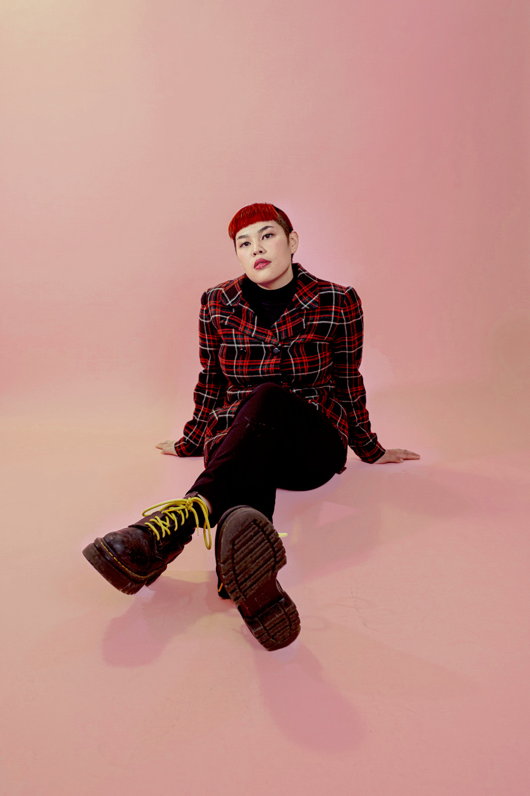
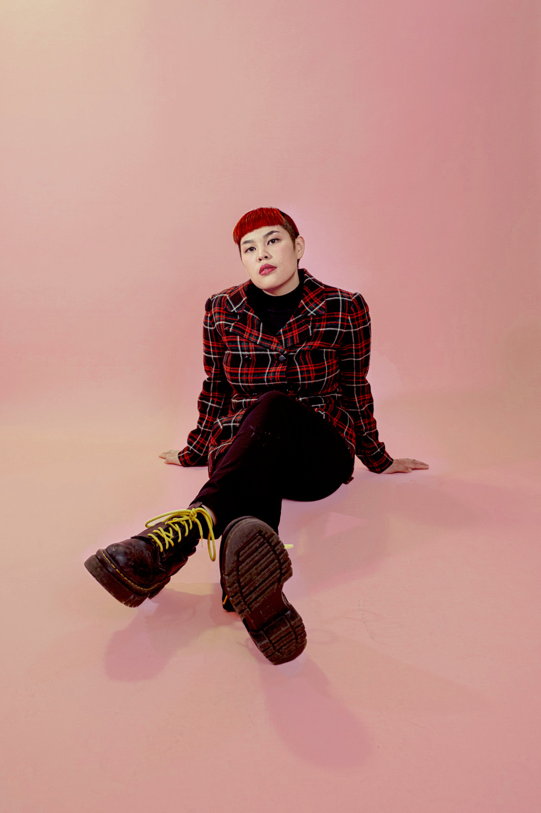

“Neighborhood renders the angst, the pit in your stomach you feel when you walk around your city during a downturn. I wrote it after reading Mark Fisher’s Capitalist Realism.” Victorino explains.
The song personifies capitalism as a “living organism” that captures and distorts our lives, even our imaginations. It also generally speaks to the advance of gentrification, and a musician’s perspective on the increasing un-livability of Seattle.
The cover art was taken at Ape Caves by Ted Howard and is a visual followup to her first EP Sheer Force of Will.


 
